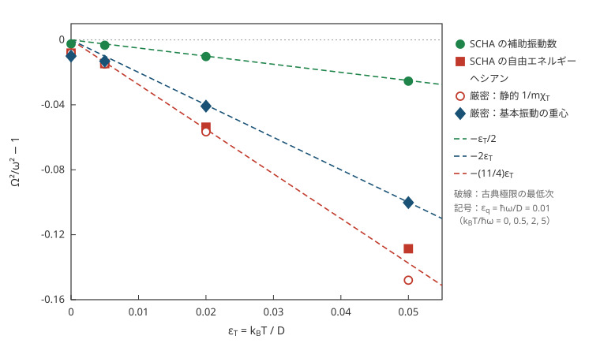

第15章有限温度のフォノン計算手法（β版）
第14章では，1自由度の非調和振動子について，フォノンの自己エネルギーを図ごとに計算した（14.6節，14.7.3節）．4次の非調和項による loop，3次の非調和項による tadpole と bubble である．Morse ポテンシャルでは，高温での振動数の2乗のずれが $\epsilon_T=k_BT/D$ を単位として loop $+\frac74$，tadpole $-\frac94$，bubble $-\frac32$，合計 $-2$ になり，厳密対角化と一致した．
現実の研究で有限温度のフォノンを計算するときには，この計算を第一原理計算の力定数や分子動力学（MD）の軌跡に対して行う．そのための手法は数多い．3フォノン・4フォノンの摂動論，自己無撞着フォノン（SCPH），確率的自己無撞着調和近似（SSCHA），TDEP，MD のパワースペクトル（DynaPhoPy），経路積分 MD などである．名前は聞いたことがあっても，互いにどういう関係にあるのか，それぞれ何を近似しているのかが見えにくい．論文の「SSCHA で求めたフォノン」と「MD のパワースペクトルのピーク」が食い違ったとき，どちらが正しいのか，そもそも同じ量を比べているのか，判断に困る．
本章の主張は，手法の違いがほぼ次の2点に整理できる，ということである．
(1) 第14章のどの図（tadpole・loop・入れ子の loop・bubble・sunset）を足し上げているか．
(2) 出てくる振動数が，補助的な振動数，静的な振動数（自由エネルギーの曲率），動的な振動数（応答関数の極）のどれか．
(2) の区別は見落とされやすい．15.4節では，Morse 振動子でこの3つが最低次でそれぞれ $-\frac12\epsilon_T$，$-\frac{11}{4}\epsilon_T$，$-2\epsilon_T$ とまったく違う値になることを，手で導き，厳密解と数値的に照合する．
- 有限温度のフォノン計算で欲しい量（$\Omega_q(T)$，$\Gamma_q(T)$，自由エネルギー，熱膨張，虚数モードの安定化，構造相転移）と，調和近似・準調和近似（QHA）でできること，できないこと
- 摂動論・SCPH・SCHA/SSCHA・TDEP・MD スペクトル・経路積分 MD の全体の地図
- Gibbs–Bogoliubov の不等式 $F\le F_0+\braket{\Ham-\Ham_0}_0$ の導出（古典は Jensen の不等式，量子は自由エネルギーの凹性と Lehmann 表示）
- 自己無撞着調和近似（SCHA）の方程式 $m\Omega^2=\braket{U''}$，$\braket{U'}=0$ と，その振動数が第14章の loop と tadpole の和であること
- 純4次の振動子と Morse 振動子で SCHA を解き，展開して第14章の図と1対1に対応させる
- 補助振動数・自由エネルギーのヘシアン・動的な極の区別．Morse で $-\frac12$，$-\frac{11}{4}$，$-2$（単位 $\epsilon_T$）になることと，その数値確認
- SSCHA・逆格子空間の SCPH・TDEP・DynaPhoPy が，それぞれどの図とどの振動数を与えるか
- 手法の選び方と，体積一定と圧力一定の混同などのよくある落とし穴
15.1 何を計算したいのか
15.1.1 欲しい量
有限温度のフォノン計算で知りたいのは，おおよそ次の量である．結晶のモードを $q\equiv(\qq,\nu)$ と書く（$\qq$ は波数，$\nu$ は分枝）．
- 振動数 $\Omega_q(T)$ と線幅 $\Gamma_q(T)$．中性子・X線の非弾性散乱やラマン散乱で測る量である．第12章で見たとおり，散乱強度は動的構造因子，すなわち応答関数の虚部 $\mathrm{Im}\,\chi$ に比例する．第14章の言葉では，$\Omega_q$ は Dyson 方程式の極 $\Omega^2=\omega^2+2\omega\Sigma'(\Omega)$，$\Gamma_q=-\Sigma''(\Omega_q)$ は自己エネルギーの虚部から出る半値半幅である（14.4.3節，表14.3）．
- 自由エネルギー $F(T,V)$．相の安定性，相図，熱膨張，熱容量はすべてここから出る．
- 熱膨張と平均構造．体積（格子定数）と内部座標の温度変化．負熱膨張（NTE）の研究ではこれが主役である．
- 虚数モードの安定化．高温相（立方晶ペロブスカイトの高温相など）では，静的な最安定構造のまわりで調和近似を行うと振動数が虚数になるモードが出る．実際にはその相は高温で安定に存在する．熱ゆらぎがモードを硬くしているからである．
- 構造相転移．ソフトモードの振動数（あるいは自由エネルギーの曲率）が温度とともにゼロに近づくこと．
15.1.2 調和近似と準調和近似（QHA）でできること，できないこと
出発点は調和近似である．静的な安定構造で原子間力の2階微分（2次の力定数）を求め，対角化して $\omega_q$ を得る．温度は Bose 分布 $n_B(\hbar\omega_q)=(\ee^{\beta\hbar\omega_q}-1)^{-1}$ を通してしか入らないので，振動数そのものは温度に依存しない．
準調和近似（quasi-harmonic approximation，QHA）は，調和振動数の体積依存性だけを取り入れる．各体積 $V$ で調和計算を行い，
$$ \begin{equation} F_{\rm QHA}(T,V)=U_0(V)+\sum_q\left[\frac{\hbar\omega_q(V)}{2}+k_BT\ln\left(1-\ee^{-\beta\hbar\omega_q(V)}\right)\right] \label{eq:15-FQHA} \end{equation} $$を $V$ について最小化して $V(T)$ を決める（$U_0$ は静的なエネルギー）．こうして熱膨張が出る．振動数の温度変化は，体積を通した $\omega_q(V(T))$ だけである．
実験で測る振動数の温度変化は，一般に2つの項に分かれる．
ここで $\gamma_q=-\partial\ln\Omega_q/\partial\ln V$ はモード Grüneisen パラメータ，$\alpha=\dd\ln V/\dd T$ は体膨張率である．QHA は第2項だけを計算し，第1項を $0$ と置く近似である．第14章で見たように，第2項は一様な歪みを通る tadpole にあたる（14.11.2〜14.11.3節）． 第1項には loop，bubble，内部座標を通る tadpole が入る．
QHA ではできないこと
- 体積一定での振動数の変化 $(\partial\Omega_q/\partial T)_V$ が出ない．loop と bubble がまるごと抜けている．
- 線幅 $\Gamma_q$ が出ない．調和振動子の和だからフォノンは寿命無限大である．
- 虚数モードを扱えない．$\omega_q^2<0$ のモードがあると式 \eqref{eq:15-FQHA} の $\ln$ が定義できず，自由エネルギーそのものが意味を失う．高温でしか安定でない相には使えない．
- 大振幅の非調和性（2つの極小をもつポテンシャル，回転する分子団など）は，振動数の体積依存性では表せない．
以下の手法は，すべてこの欠点を補うために作られた．
15.2 手法の地図
まず全体を1枚で見る（図15.1，表15.1）．分類は「何を入力にするか」による．
| 分類 | 代表的な手法 | 入力 | 主な出力 | 本章 |
|---|---|---|---|---|
| (A) 摂動論 | 3フォノン・4フォノンの自己エネルギー | 調和・3次・4次の力定数 | $\Gamma_q$，振動数のずれ，熱伝導率 | 15.6節，15.9節 |
| (B) 自己無撞着 | SCPH，SCHA，SSCHA | 力定数（SCPH）／配置ごとの力（SSCHA） | 繰り込まれた振動数，自由エネルギー，平均構造 | 15.3〜15.6節 |
| (C) 有効調和模型 | TDEP など | 有限温度 MD の力と変位 | 温度に依存する有効力定数 | 15.7節 |
| (D) MD スペクトル | 速度自己相関・モード射影（DynaPhoPy），経路積分 MD | MD の軌跡 | スペクトル，$\Omega_q$，$\Gamma_q$ | 15.8節 |
| (E) 道具 | QHA，力定数の抽出，機械学習ポテンシャル | — | — | 各節 |
15.3 変分原理による自己無撞着調和近似
調和近似の振動数が温度に依存しないのは，静的な構造でのポテンシャルの曲率を使うからである．有限温度では原子は平衡位置のまわりで大きくゆらいでいる．それなら「ゆらいでいる範囲で平均した曲率」を使えばよいのではないか．これを筋の通った近似にするのが，自由エネルギーについての変分原理である．この考え方は Hooton（1955）[1] にさかのぼり，Werthamer（1970）[2] は自由エネルギー汎関数の停留条件から自己無撞着フォノンを定式化した．
15.3.1 Gibbs–Bogoliubov の不等式
定理15.1 Gibbs–Bogoliubov の不等式
ハミルトニアン $\Ham$ の系の自由エネルギー $F=-k_BT\ln\Tr\,\ee^{-\beta\Ham}$ と，任意の「試行ハミルトニアン」$\Ham_0$ について
が成り立つ．ここで $F_0=-k_BT\ln\Tr\,\ee^{-\beta\Ham_0}$，$\braket{\cdots}_0$ は $\Ham_0$ の熱平均である（Isihara [3]．SSCHA の原論文 [4] もこの不等式から出発する）．
右辺は計算できる量である（$\Ham_0$ を解ける模型に選ぶから）．左辺の真の自由エネルギーは計算できない．だから，$\Ham_0$ にパラメータを持たせて右辺を最小化すれば，真の $F$ の最良の上界と，それを与える「最良の $\Ham_0$」が得られる．
導出15.1：古典の場合（Jensen の不等式）
ステップ1．$V\equiv\Ham-\Ham_0$ と置く．古典統計では $\Ham$ と $\Ham_0$ は可換な関数だから $\ee^{-\beta\Ham}=\ee^{-\beta\Ham_0}\ee^{-\beta V}$ と分けられ，
$$ \frac{Z}{Z_0}=\frac{\int\dd\Gamma\,\ee^{-\beta\Ham_0}\ee^{-\beta V}}{\int\dd\Gamma\,\ee^{-\beta\Ham_0}}=\braket{\ee^{-\beta V}}_0 $$となる（$\dd\Gamma$ は位相空間の体積要素）．
ステップ2．指数関数は下に凸なので，確率分布についての平均で $\braket{\ee^{X}}\ge\ee^{\braket{X}}$（Jensen の不等式）が成り立つ．$X=-\beta V$ として
$$ \frac{Z}{Z_0}\ge\ee^{-\beta\braket{V}_0}. $$ステップ3．両辺の対数を取って $-k_BT$ を掛けると不等号の向きが逆になり，$F-F_0\le\braket{V}_0$．∎
量子の場合は $\Ham$ と $\Ham_0$ が可換でないので，ステップ1の分解ができない．そこで別の道を通る．第8章の Lehmann 表示を使うのが近道である．
導出15.2：量子の場合（自由エネルギーの凹性）
ステップ1：結合定数を入れる．$\Ham_\lambda=\Ham_0+\lambda V$（$0\le\lambda\le1$）とし，$F(\lambda)=-k_BT\ln\Tr\,\ee^{-\beta\Ham_\lambda}$ とする．$F(0)=F_0$，$F(1)=F$ である．
ステップ2：1階微分．$\dfrac{\dd}{\dd\lambda}\Tr\,\ee^{-\beta\Ham_\lambda}=-\beta\Tr\left[V\ee^{-\beta\Ham_\lambda}\right]$（トレースの中では巡回できるので，非可換でもこの形になる）．したがって
$$ F'(\lambda)=\braket{V}_\lambda . $$ステップ3：2階微分．$\Ham_\lambda$ の固有状態 $\ket{n}$（固有値 $E_n$，Boltzmann 重み $p_n$）を使うと，$\lambda$ をわずかに変えたときの $\braket{V}_\lambda$ の変化は，第7章・第8章の静的な線形応答そのものである．2次摂動で計算すると
$$ F''(\lambda)=-\chi_T,\qquad \chi_T=\sum_{n\neq m}\frac{p_n-p_m}{E_m-E_n}\abs{V_{mn}}^2+\beta\left[\sum_np_nV_{nn}^2-\braket{V}_\lambda^2\right] $$となる（縮退がない場合．$\chi_T$ は $V$ に共役な「力」に対する等温の静的感受率）．第1項の各項は $p_n-p_m$ と $E_m-E_n$ が同符号なので $\ge0$，第2項は $V_{nn}$ の分散なので $\ge0$．よって $\chi_T\ge0$，すなわち $F''(\lambda)\le0$：$F(\lambda)$ は上に凸である．
ステップ4．上に凸な関数は接線の下にある．$\lambda=0$ での接線を $\lambda=1$ まで延ばせば
$$ F(1)\le F(0)+F'(0)=F_0+\braket{V}_0 . $$∎ 物理的には，「静的感受率は負にならない」という安定性の条件が，そのまま変分原理になっている．
15.3.2 調和振動子を試行ハミルトニアンにする
1自由度 $\Ham=\dfrac{p^2}{2m}+U(x)$ について，試行ハミルトニアンを中心 $x_0$，振動数 $\Omega$ の調和振動子に選ぶ．
$$ \begin{equation} \Ham_0=\frac{p^2}{2m}+\frac12m\Omega^2(x-x_0)^2 . \label{eq:15-H0} \end{equation} $$$x_0$ と $\Omega$ が変分パラメータである．必要な量を順に書く．
- 調和振動子の自由エネルギー：$F_0(\Omega)=k_BT\ln\left[2\sinh\dfrac{\beta\hbar\Omega}{2}\right]$．
- 位置の分散（第13章，および第14章14.4.2節の $\braket{\hat A^2}_0=2n_B+1$ を振動数 $\Omega$ で書いたもの．$\coth\frac{\beta\hbar\Omega}{2}=2n_B(\hbar\Omega)+1$）： $$ \begin{equation} s\equiv\braket{(x-x_0)^2}_0=\frac{\hbar}{2m\Omega}\coth\frac{\beta\hbar\Omega}{2} \;\xrightarrow{\;k_BT\gg\hbar\Omega\;}\;\frac{k_BT}{m\Omega^2}. \label{eq:15-s} \end{equation} $$
- 運動エネルギーは $\Ham$ と $\Ham_0$ で共通なので打ち消し，$\braket{\Ham-\Ham_0}_0=\braket{U}_0-\frac12m\Omega^2 s$．
したがって変分自由エネルギーは
である．ここで $\braket{U}_0$ を計算するのに，次の事実が効く．
なぜ量子力学でも「ガウス分布で平均する」だけでよいのか
$\braket{U(x)}_0$ は位置だけの関数の平均なので，位置の分布 $P(x)=\braket{x|\hat\rho_0|x}$ さえ分かればよい．調和振動子の熱平衡状態では，$x$ のすべての偶数次のモーメントが2次のモーメントの積に分解する．これは第13章・付録B の Wick の定理そのもの（$\braket{x^4}_0=3\braket{x^2}_0^2$ など）であり，量子力学でも有限温度でも成り立つ．モーメントがすべてガウス分布と同じなら分布もガウス分布である．したがって
$$ \braket{U}_0=\int_{-\infty}^{\infty}\dd y\,\frac{\ee^{-y^2/2s}}{\sqrt{2\pi s}}\,U(x_0+y) $$で，量子効果は分散 $s$ が式 \eqref{eq:15-s} の $\coth$ を含むことにだけ現れる．零点振動 $s\to\hbar/2m\Omega$ もここに入っている．
ガウス平均には2つの便利な恒等式がある．$\partial_{x_0}$ は被積分関数の $U$ を微分するだけなので $\partial_{x_0}\braket{U}_0=\braket{U'}_0$．また，ガウス関数は拡散方程式 $\partial_s g=\frac12\partial_y^2g$ を満たすので，部分積分を2回行えば $\partial_s\braket{U}_0=\frac12\braket{U''}_0$ となる．
導出15.3：自己無撞着方程式
ステップ1：$x_0$ についての停留．$s$ は $x_0$ によらないので $\partial F_{\rm SCHA}/\partial x_0=\braket{U'}_0=0$．平均の力がゼロという条件である．
ステップ2：$\Omega$ についての停留．$\dfrac{\dd F_0}{\dd\Omega}=\dfrac{\hbar}{2}\coth\dfrac{\beta\hbar\Omega}{2}=m\Omega s$ に注意して，式 \eqref{eq:15-FSCHA} を $\Omega$ で微分する（$s$ も $\Omega$ の関数で，$s'\equiv\dd s/\dd\Omega$）．
$$ \frac{\dd F_{\rm SCHA}}{\dd\Omega} =m\Omega s+\frac{\partial\braket{U}_0}{\partial s}s'-m\Omega s-\frac12m\Omega^2s' =s'\left[\frac{\partial\braket{U}_0}{\partial s}-\frac12m\Omega^2\right]. $$$s'\neq0$ なので，括弧がゼロ．恒等式 $\partial_s\braket{U}_0=\frac12\braket{U''}_0$ を使って
∎ 右辺の平均は $\Omega$ で決まる分散 $s$ のガウス分布で取るので，$\Omega$ を決める式の右辺に $\Omega$ が入っている．これが「自己無撞着」の意味である．
式 \eqref{eq:15-SCHA} は「熱ゆらぎで平均したポテンシャルの曲率が有効なばね定数になる」と読める．第14章（14.8.1〜14.8.2節）で見たように，$\braket{U''}/m$ を最低次まで展開したものは loop と tadpole の和である． したがって，SCHA の $\Omega$ は bubble を含まない．このことを次節で具体的に確かめる．
15.4 例題：1自由度で手を動かす —— 3つの振動数
15.4.1 純4次の振動子：loop と入れ子の loop
$U(x)=\frac12m\omega^2x^2+\varphi x^4$（3次の項なし）とする．対称性から $x_0=0$ で，$U''=m\omega^2+12\varphi x^2$ だから $\braket{U''}_0=m\omega^2+12\varphi s$．式 \eqref{eq:15-SCHA} は
となる．右辺の $\braket{x^2}_\Omega$ を調和振動数 $\omega$ で評価すれば，第14章の loop の自己エネルギー $2\omega\Sigma_{\rm loop}=12\varphi\braket{\hat x^2}_0/m$（14.6.1節，表14.4）そのものである．式 \eqref{eq:15-quartic} は，loop の中の伝播関数を繰り込まれた振動数 $\Omega$ のものに置き換えた式であり，第14章で「$\braket{x^2}$ を繰り込まれた振動数で計算する」として書いた SCPH の式（14.9.3節）と同じである．本章ではそれを変分原理から導いたことになる．
古典極限 $\braket{x^2}_\Omega\to k_BT/m\Omega^2$ では，式 \eqref{eq:15-quartic} は $\Omega^2$ についての2次方程式
$$ \begin{equation} \Omega^4-\omega^2\Omega^2-\frac{12\varphi k_BT}{m^2}=0 \label{eq:15-quartic-cl} \end{equation} $$になる．これを展開すると第1項が loop，第2項が二重 loop になること（量子の場合も含めて）は第14章14.9.3節で示した．Morse の比 $\varphi=\frac76\xi^2/m\omega^2$ を入れれば
$$ \frac{\Omega^2}{\omega^2}-1=\underbrace{\frac74\epsilon_T}_{\text{loop}}\;\underbrace{-\frac{49}{16}\epsilon_T^2}_{\text{二重 loop}}+\cdots $$である（第14章14.9.2節，表14.6）．自己無撞着に解くことは，loop の中にさらに loop を入れた入れ子の loop を無限に足し上げることにあたる．しかし同じ $\varphi^2$ の次数にある sunset（$-\frac{147}{256}\epsilon_T^2$，4フォノン過程）は入らない．sunset の中の線は loop に繰り込めない形でつながっているからである．
物理的な意味：ソフトモードはなぜ硬くなるのか
式 \eqref{eq:15-quartic-cl} で $\omega^2<0$（調和近似で虚数）としてみる．$\varphi>0$ なら，十分高温で $\Omega^2>0$ の根が現れ，モードは実数の振動数をもつ．$\omega=0$ の純4次では $\Omega=(12\varphi k_BT/m^2)^{1/4}$ である．調和近似で不安定なモードが高温で安定化するのは，大きな振幅でゆらぐと4次の壁を感じて平均の曲率が正になるからである．逆格子空間の SCPH（15.6節）は，結晶のすべてのモードについてこれを行う．
15.4.2 Morse 振動子：tadpole も入る
$U(x)=D\left(1-\ee^{-ax}\right)^2=D\left[1-2\ee^{-ax}+\ee^{-2ax}\right]$ とする．$\frac12m\omega^2=Da^2$，すなわち $a=2\xi/m\omega^2$ である（第14章14.2.2節．同節の $D=m^3\omega^6/8\xi^2$，$\varphi=\frac76\xi^2/m\omega^2$ もここで使う）．ガウス平均は指数関数について閉じた形になる．
導出15.4：Morse の SCHA
ステップ1：指数関数のガウス平均．平方完成により $\displaystyle\int\dd y\,\frac{\ee^{-y^2/2s}}{\sqrt{2\pi s}}\ee^{-ky}=\ee^{k^2s/2}$．したがって $\braket{\ee^{-kx}}_0=\ee^{-kx_0+k^2s/2}$ であり，
$$ \begin{equation} \braket{U}_0=D\left[1-2E_1+E_2\right],\qquad E_1\equiv\ee^{-ax_0+a^2s/2},\quad E_2\equiv\ee^{-2ax_0+2a^2s}. \label{eq:15-Morse-U} \end{equation} $$ステップ2：$x_0$ についての停留．$\partial_{x_0}E_1=-aE_1$，$\partial_{x_0}E_2=-2aE_2$ より $\partial_{x_0}\braket{U}_0=2aD(E_1-E_2)=0$，すなわち $E_1=E_2$：
$$ -ax_0+\frac{a^2s}{2}=-2ax_0+2a^2s \quad\Longrightarrow\quad x_0=\frac32as . $$ステップ3：$s$ についての停留．$\partial_sE_1=\frac{a^2}{2}E_1$，$\partial_sE_2=2a^2E_2$ より $\partial_s\braket{U}_0=Da^2(-E_1+2E_2)$．停留点では $E_1=E_2=E$ で，$E=\ee^{-\frac32a^2s+\frac12a^2s}=\ee^{-a^2s}$．よって $\frac12m\Omega^2=\partial_s\braket{U}_0=Da^2\ee^{-a^2s}$，$Da^2=\frac12m\omega^2$ を使って
∎ 第3式の右辺に $\Omega$ が入っているので，3式を連立して数値的に解く（15.4.5）．
熱膨張．第1式は第14章の $\braket{\hat x}=3\xi\braket{\hat x^2}_0/m\omega^2$（14.6.2節，14.8.2節）と同じである．実際，$\xi=Da^3$，$m\omega^2=2Da^2$ だから $3\xi s/m\omega^2=\frac32as$．SCHA は，tadpole の物理である平均位置のずれを，中心 $x_0$ の変分として自動的に取り込む．
振動数の最低次．$a^2\hbar/2m\omega=\hbar\omega/4D=\epsilon_{\rm q}/4$ なので
$$ \begin{equation} \frac{\Omega^2}{\omega^2}-1\simeq-a^2s\simeq-\frac{\epsilon_{\rm q}}{4}\left(2n_B+1\right) \;\xrightarrow{\;k_BT\gg\hbar\omega\;}\;-\frac12\epsilon_T \label{eq:15-aux-lowest} \end{equation} $$（$n_B=n_B(\hbar\omega)$）．これは第14章の loop と tadpole の和 $+\frac74-\frac94=-\frac12$ に一致する．
15.4.3 足りないもの：bubble
ところが Morse の真のシフトは，第14章で Morse の厳密な準位（14.3.6節）と表14.6の厳密値で確かめたとおり $-2\epsilon_T$ である（内訳は14.7.3節）．SCHA の振動数 \eqref{eq:15-aux-lowest} はその4分の1しか与えない．差の $-\frac32\epsilon_T$ は bubble，すなわち倍音（2フォノン状態）との準位反発である．
なぜ抜けるのかは，式 \eqref{eq:15-SCHA} から明らかである．SCHA の $\Omega$ は「ガウス分布で平均した曲率」であり，第14章の言葉では応答スペクトルの2次のモーメント $\braket{z^2}=\braket{U''}/m$ である（14.8.3節の総和則）．スペクトルには基本振動の他に倍音の線があり，2次のモーメントは両方の重み付き平均である．倍音は上（$2\omega$ 付近）にあるので，基本振動の位置は平均より下にずれる．この「下へのずれ」が bubble であり，平均の曲率という静的な量からは出てこない．
SCHA の振動数は「補助的な」振動数である
SCHA の $\Omega$（結晶では補助力定数を対角化した振動数）は，自由エネルギーを最小化するために導入した試行ハミルトニアンのパラメータであって，散乱実験のピーク位置ではない．Bianco らはこの量を「補助的な量としてのみ理解すべきもの」と明言し，Hartree–Fock や密度汎関数理論の1粒子エネルギーとの類似を指摘している [5]．本章ではこれを補助振動数と呼ぶ．物理的な振動数を得るには，(i) 自由エネルギーの2階微分（ヘシアン）を取るか，(ii) bubble を含む動的な補正を加える必要がある．
15.4.4 自由エネルギーの曲率（ヘシアン）：静的な振動数
物理的な「静的な振動数」は，自由エネルギーを平均位置の関数とみたときの曲率である．外力 $f$ を加えて $\Ham-fx$ とすると（ここの $f$ は力そのもので，以下の $\chi_T$ は第14章14.4.1節の $\chi_{\text{力学}}$ の流儀の値である．本書の $\Ham_{\text{ext}}=+f\hat B$ の流儀の $\chi^R_{xx}$ とは符号が逆になる），$\bar x\equiv\braket{x}=-\partial F/\partial f$，等温の静的感受率は $\chi_T=\partial\bar x/\partial f$ である．Legendre 変換 $A(\bar x)=F+f\bar x$ を作ると $\dd A/\dd\bar x=f$，$\dd^2A/\dd\bar x^2=\partial f/\partial\bar x=1/\chi_T$．つまり
$$ \begin{equation} m\Omega_{\rm static}^2\equiv\frac{\dd^2A}{\dd\bar x^2}=\frac{1}{\chi_T} \label{eq:15-static-def} \end{equation} $$である．これは第8章の静的感受率 $\chi(\omega\to0)$ の等温版で，「ゆっくり押したときのばね定数」にあたる．
SCHA では，$x_0$ を固定して $\Omega$ だけで最小化した $F_{\rm SCHA}(x_0)$ が $A(\bar x)$ の近似になる．その2階微分は，$s$ を $x_0$ に追随させることに注意して
導出15.5：SCHA 自由エネルギーのヘシアン
ステップ1．変数を $(x_0,s)$ に取る．$\Omega$ を $s$ で表し，$G(s)\equiv F_0-\frac12m\Omega^2s$ と置くと $F_{\rm SCHA}=G(s)+\braket{U}_0$．導出15.3 と同じ計算で $G'(s)=-\frac12m\Omega^2$，$G''(s)=-m\Omega\,\dd\Omega/\dd s>0$（$s$ が増えると $\Omega$ は減る）．古典極限では $\Omega^2=k_BT/ms$ より $G''=k_BT/2s^2$．
ステップ2．$s$ を最適値に保ったまま $x_0$ で2回微分すると，陰関数の微分により
$$ \frac{\dd^2F_{\rm SCHA}}{\dd x_0^2}=F_{xx}-\frac{F_{xs}^2}{F_{ss}}, $$ガウス平均の恒等式から $F_{xx}=\braket{U''}_0=m\Omega^2$，$F_{xs}=\partial_s\braket{U'}_0=\frac12\braket{U'''}_0$，$F_{ss}=G''+\frac14\braket{U''''}_0$．
ステップ3：形を整える．$\Lambda\equiv-1/4G''$（$<0$）と置くと
これは Bianco らが結晶について導いたヘシアンの式 $\Phi+\Phi^{(3)}\Lambda[1-\Phi^{(4)}\Lambda]^{-1}\Phi^{(3)}$ [5] を1自由度に縮めた形である（$\Phi^{(3)}$，$\Phi^{(4)}$ はガウス平均した3階・4階の微分）．第2項は $\Lambda<0$ なので常に負で，振動数を下げる．
ステップ4：Morse の最低次．古典極限で $s\simeq k_BT/m\omega^2$，$\braket{U'''}_0\simeq U'''(0)=-6\xi=-6Da^3$．分母の $\braket{U''''}\Lambda$ は $\epsilon_T$ の高次なので落とすと，第2項は
$$ -\frac{(3Da^3)^2}{k_BT/2s^2}=-\frac{18D^2a^6s^2}{k_BT}\simeq-\frac{18D^2a^6}{k_BT}\left(\frac{k_BT}{2Da^2}\right)^2=-\frac92a^2k_BT . $$$m\omega^2=2Da^2$ で割ると $-\frac94\epsilon_T$．第1項は $-\frac12\epsilon_T$（式 \eqref{eq:15-aux-lowest}）だから，
$$ \frac{\Omega_{\rm Hess}^2}{\omega^2}-1\simeq-\frac12\epsilon_T-\frac94\epsilon_T=-\frac{11}{4}\epsilon_T . $$∎
この $-\frac94\epsilon_T$ は，第14章の bubble を外部の松原振動数ゼロ（$\omega_n=0$）で評価したものである．第14章14.6.3節の $P(\ii\omega_n)$ を $n=0$ と置くと $(2n_B+1)/\omega+2n_B(n_B+1)\beta\hbar$ となり，$z=\omega$ に解析接続した値 $\frac43(2n_B+1)/\omega$ との比は $\frac34\left[1+\frac{2n_B(n_B+1)\beta\hbar\omega}{2n_B+1}\right]$，古典極限で $\frac32$ である．動的な bubble $-\frac32\epsilon_T$ に $\frac32$ を掛けて $-\frac94\epsilon_T$ が出る．等温の静的感受率に効くのは $\delta_{n,0}$ の項を含むこの値である．解析接続した遅延関数の $z\to0$ の極限（$\delta_{n,0}$ の項を含まない）では比が $\frac34$，すなわち $-\frac98\epsilon_T$ になり，これとも違う（第14章14.6.3節の「$\delta_{n,0}$ の項は解析接続しない」の注意，および表14.8の「静的応答と動的応答」の行）．「静的」と言うときに，等温の応答（松原振動数ゼロ）なのか，遅延関数の $z\to0$ なのかを区別する必要がある．
まとめると，Morse 振動子には次の3つの振動数がある（いずれも古典極限の最低次，単位 $\epsilon_T$）．
| 振動数 | 定義 | loop | tadpole | bubble | 合計 |
|---|---|---|---|---|---|
| 補助（SCHA の $\Omega$） | $m\Omega^2=\braket{U''}_0$ | $+\frac74$ | $-\frac94$ | なし | $-\frac12$ |
| 静的（ヘシアン） | $1/\chi_T=\dd^2A/\dd\bar x^2$ | $+\frac74$ | $-\frac94$ | $-\frac94$（静的） | $-\frac{11}{4}$ |
| 動的（極） | $\chi(z)$ の極（1自由度では基本振動の重心） | $+\frac74$ | $-\frac94$ | $-\frac32$（$z=\Omega$） | $-2$ |
量子の場合の最低次は，$n_B=n_B(\hbar\omega)$ として
$$ \begin{aligned} \text{補助：}&\quad-\frac{\epsilon_{\rm q}}{4}(2n_B+1),\\ \text{静的：}&\quad-\frac{\epsilon_{\rm q}}{4}(2n_B+1)-\frac{9\epsilon_{\rm q}}{16}\left[(2n_B+1)+2n_B(n_B+1)\frac{\hbar\omega}{k_BT}\right],\\ \text{動的：}&\quad-\epsilon_{\rm q}(2n_B+1) \end{aligned} $$である．$T\to0$ では静的が $-\frac{13}{16}\epsilon_{\rm q}$，動的が $-\epsilon_{\rm q}$ になり，静的のほうが小さい．高温では大小が逆転する．
15.4.5 数値確認
以上を厳密解と照合する．単位を $\hbar=m=\omega=1$ とし，$D=100\,\hbar\omega$（$\epsilon_{\rm q}=0.01$，束縛準位は200個）に取る．計算の中身は次のとおりである．
- SCHA．式 \eqref{eq:15-Morse-SCHA} を数値的に解き（Brent 法），式 \eqref{eq:15-FSCHA} の自由エネルギー，式 \eqref{eq:15-Hessian} のヘシアンを計算した．ヘシアンは，$x_0$ を固定して $\Omega$ で最小化した $F_{\rm SCHA}(x_0)$ の差分2階微分とも照合した（相対差 $10^{-3}$ 以下）．
- 厳密な自由エネルギー．Morse の厳密な準位 $E_n=\hbar\omega(n+\frac12)-[\hbar\omega(n+\frac12)]^2/4D$ [36] による束縛状態の和．
- 厳密な $\braket{x}$ と $\chi_T$．sinc 関数の離散変数表現（DVR，格子間隔 $0.05\sqrt{\hbar/m\omega}$）で固有状態を求め，導出15.2 と同じ Lehmann 表示で $\chi_T$ を計算した．DVR の固有値は解析的な $E_n$ と $10^{-12}\hbar\omega$ の精度で一致する．
- 厳密な動的な振動数．第14章14.9.2節の定義に従い，基本振動の線 $n\to n+1$ を総和則の重み $w_{n}\abs{x_{n+1,n}}^2(p_n-p_{n+1})$（$w_n$ は線の振動数，$p_n$ は Boltzmann 重み．14.8.3節）で平均した $\braket{w^2}$ を $\Omega_{\rm dyn}^2$ とした（多重線の重心．14.7.4節では振動数の1次のモーメントを使ったが，最低次では同じ値になる）．行列要素は閉じた式と DVR の両方で計算し，一致を確かめた．
束縛状態だけで和を取ることについて一言注意しておく．Morse ポテンシャルは $x\to\infty$ で $D$ に近づくので，無限に広い空間では有限温度で分子はいずれ解離し，厳密な自由エネルギーは定義できない．ここでは解離の Boltzmann 因子 $\ee^{-D/k_BT}$ が無視できる温度（最高温度で $\ee^{-20}$）に限り，束縛状態の熱平衡を「厳密解」とした．
| $k_BT/\hbar\omega$ | $0$ | $0.5$ | $2$ | $5$ |
|---|---|---|---|---|
| $\epsilon_T$ | $0$ | $0.005$ | $0.02$ | $0.05$ |
| SCHA の中心 $x_0$ | $0.0531$ | $0.0698$ | $0.2187$ | $0.5459$ |
| 厳密な $\braket{x}$ | $0.0531$ | $0.0701$ | $0.2237$ | $0.5819$ |
| $F_{\rm SCHA}-F_{\rm exact}$ | $3.1\times10^{-4}$ | $1.0\times10^{-3}$ | $1.55\times10^{-2}$ | $0.102$ |
| 補助（SCHA の $\Omega^2$） | $-0.00250$ （$-0.00250$） | $-0.00329$ （$-0.00328$） | $-0.01026$ （$-0.01021$） | $-0.02541$ （$-0.02508$） |
| 静的：SCHA のヘシアン | $-0.00809$ | $-0.01464$ | $-0.05372$ | $-0.12864$ |
| 静的：厳密な $1/m\chi_T$ | $-0.00811$ （$-0.00813$） | $-0.01482$ （$-0.01474$） | $-0.05658$ （$-0.05521$） | $-0.14801$ （$-0.13758$） |
| 動的：厳密な基本振動の重心 | $-0.00998$ （$-0.01000$） | $-0.01312$ （$-0.01313$） | $-0.04081$ （$-0.04083$） | $-0.10019$ （$-0.10033$） |
表15.3から次のことが読み取れる．
- 変分原理．$F_{\rm SCHA}-F_{\rm exact}$ はすべての温度で正であり，式 \eqref{eq:15-GB} のとおり SCHA は上界を与える．差は $\epsilon_T$ とともに急速に増える．
- 熱膨張．$T=0$ でも $x_0>0$ である（零点振動による膨張）．$x_0$ は厳密な $\braket{x}$ と $T=0$ で4桁一致し，$\epsilon_T=0.05$ でも差は6% にとどまる．平均構造については SCHA はよい近似である．
- 3つの振動数．補助・静的・動的は，どの温度でもはっきり違う．補助振動数は最低次の式 \eqref{eq:15-aux-lowest} によく従い，動的な振動数の4分の1程度しかない．SCHA のヘシアンは厳密な静的振動数を最低次でよく再現する（$\epsilon_T=0.05$ で13% のずれは $\epsilon_T^2$ の項）．
古典極限の係数を直接確かめるため，$\epsilon_{\rm q}\to0$（$\epsilon_T$ を固定）の計算も行った（表15.4）．SCHA と静的振動数は古典統計の式（静的は1次元の数値積分で $\chi_T=\braket{(x-\bar x)^2}/k_BT$），動的振動数は $k_BT/\hbar\omega=200$ の量子計算で評価した．
| $\epsilon_T$ | 補助 | SCHA のヘシアン | 厳密な静的 | 厳密な動的 |
|---|---|---|---|---|
| $0.0025$ | $-0.5003$ | $-2.7405$ | $-2.7578$ | $-2.0000$ |
| $0.005$ | $-0.5006$ | $-2.7311$ | $-2.7659$ | $-2.0000$ |
| $0.01$ | $-0.5013$ | $-2.7124$ | $-2.7825$ | $-1.9999$ |
| $0.02$ | $-0.5025$ | $-2.6757$ | $-2.8185$ | $-1.9997$ |
| $0.05$ | $-0.5065$ | $-2.5711$ | $-2.9591$ | $-1.9973$ |
| $\epsilon_T\to0$ | $-0.5000$ | $-2.7499$ | $-2.7498$ | $-2.0000$ |
| 予想 | $-\frac12$ | $-\frac{11}{4}$ | $-\frac{11}{4}$ | $-2$ |
3つの振動数の予想はすべて成り立った．図15.2に $\epsilon_{\rm q}=0.01$ の結果をまとめる．

1自由度の「動的な振動数」は重心である
第14章で見たように，1自由度の非調和振動子の熱的なスペクトルは1本のローレンツ関数ではなく，占有数ごとに少しずつずれた多重線である（14.10.2節，図14.7）．最低次の自己エネルギーの極が与えるのはこの多重線の重心であり，最も強い線（ピーク）のずれはその約半分である．表15.3の「動的」は重心である．結晶では熱力学極限で多重線が1本にまとまり，ピークと極が一致する．
この例題から結晶へ持ち帰ること
- SCHA（と SCPH）の振動数は補助振動数である．loop と tadpole（と入れ子の loop）は含むが bubble を含まない．3次の非調和性が強いモードでは，真の振動数からはっきりずれる．
- 相転移を決めるのは静的な振動数（ヘシアン）である．自由エネルギーの曲率がゼロになるところが2次相転移である．動的な極とも補助振動数とも違う．
- 散乱実験と比べるのは動的な振動数である．補助振動数に bubble を $z=\Omega$ で加えたもの（最低次では $-\frac12-\frac32=-2$）が極を与える．
- Morse のように3次と4次が同程度の系では，3つの振動数の違いは振動数のずれそのものと同じ大きさになる．
15.5 確率的自己無撞着調和近似（SSCHA）
15.5.1 何を変分するか
SSCHA（stochastic self-consistent harmonic approximation）は，15.3節の変分原理を結晶にそのまま適用し，必要な平均を確率的に計算する方法である（Errea，Calandra，Mauri 2014 [4]）．試行ハミルトニアンは任意の調和ハミルトニアン，すなわち密度行列をガウス型に限る．変分パラメータは
- 各原子の中心位置 $\bm R$（1自由度の $x_0$ にあたる．平均構造）
- 補助力定数 $\Phi$（1自由度の $m\Omega^2$ にあたる．振動数と偏極ベクトルを決める）
である [4]．変分自由エネルギーは式 \eqref{eq:15-FSCHA} の多自由度版 $F[\bm R,\Phi]=F_{\rm harm}[\Phi]+\braket{V-V_{\rm harm}}_{\bm R,\Phi}$ で，$V$ は真のポテンシャル（スーパーセルの第一原理計算などで与える），$V_{\rm harm}$ は試行の調和ポテンシャルである．
15.5.2 確率的サンプリングと再重み付け
1自由度の Morse ではガウス平均が閉じた形で計算できた．結晶ではそうはいかない．SSCHA は，ガウス分布 $\rho_{\bm R,\Phi}$ に従って原子を変位させたスーパーセルの配置をたくさん作り，それぞれでエネルギーと力を計算して平均を取る [4]．15.3節の恒等式 $\partial_{x_0}\braket{U}=\braket{U'}$，$\partial_s\braket{U}=\frac12\braket{U''}$ の多自由度版により，自由エネルギーの勾配は「力」と「力と変位の相関」の平均で書けるので，2階微分を直接計算する必要はない．ガウス分布の共分散は式 \eqref{eq:15-s} の $\coth$ を含む量子力学的なものなので，零点振動を含めて原子核を量子的に扱うことになる．
$\Phi$ を更新するたびに新しい配置を作るのは高価なので，古い配置を使い回す．ある $\Phi_0$ で作った配置での平均を，新しい $\Phi$ での平均に直すには，各配置に密度の比 $\rho_{\Phi}/\rho_{\Phi_0}$ を重みとして掛ければよい（再重み付け，importance sampling）[4]．比がばらつきすぎたら（有効なサンプル数が減ったら）新しい配置を作り直す．
15.5.3 得られるもの
- 自由エネルギーと，その上界としての性質（変分原理）[4]．
- 平均構造．中心位置 $\bm R$ の最適化．格子定数も応力テンソルを使って最適化でき，有限温度の構造最適化になる [6]．15.4節の $x_0=\frac32as$ にあたり，内部座標を通る tadpole と一様な歪みを通る tadpole の両方を取り込む．
- 補助力定数 $\Phi$．15.4.3 で見たとおり，これは物理的なフォノンではない [5]．
- 自由エネルギーのヘシアン．$\partial^2F/\partial\bm R\partial\bm R$ は式 \eqref{eq:15-Hessian} の結晶版 $\Phi+\Phi^{(3)}\Lambda[1-\Phi^{(4)}\Lambda]^{-1}\Phi^{(3)}$ で与えられる [5]．$\Lambda$ は負定値なので，第2項（静的な bubble とその繰り込み）が固有値を下げる．温度を下げてヘシアンの固有値がゼロを横切るところが2次（変位型）の構造相転移である [5]．公式チュートリアルでは，ヘシアンは静的極限の自己エネルギーにちょうど対応すると説明されている [38]．
- 動的な拡張とスペクトル関数．Bianco らは SCHA の自己エネルギーを使った Dyson 方程式による動的な理論の「仮設（ansatz）」を提案し，最低次で摂動論に戻ることを示した [5]．その際，bubble だけを残した動的な自己エネルギーは「一般には正当化されない」とも述べている [5]．公式コードでは bubble 近似のスペクトル関数を計算でき [38]，さらに時間依存 SCHA（TD-SCHA）として時間相関関数を直接計算する方法が提案されている [7]．15.4節の言葉では，補助振動数に $z=\Omega$ の bubble を加えて動的な振動数に近づける操作である．
公開コード（python-sscha）は Python で書かれ [6]，力の計算に密度汎関数理論（DFT）や機械学習ポテンシャルを使える [6, 38]．
SSCHA の結果を読むときの確認事項
- 図に描かれている分散は，補助力定数か，ヘシアンか，スペクトル関数のピークか．
- ヘシアンは4次の項（$\Phi^{(4)}$）まで含めたか，bubble 近似（$\Phi^{(4)}$ を落とす）か [38]．
- 体積（格子定数）は固定か，応力で最適化したか．
15.6 逆格子空間の自己無撞着フォノン（SCPH）
15.6.1 4次の力定数を使う自己無撞着方程式
SCHA が実空間でポテンシャル全体をガウス平均するのに対し，SCPH（self-consistent phonon）は，ポテンシャルを4次までテイラー展開した力定数を使い，逆格子空間で自己無撞着方程式を解く．第一原理計算による代表的な実装は Tadano と常行による [8, 9]．力定数はスーパーセルの変位計算から，圧縮センシング（LASSO）を使って高次まで効率よく抽出する [8, 34]．
モードの混じり（偏極ベクトルの変化）を無視した対角近似では，SCPH の方程式は $\Omega_q^2=\omega_q^2+2\Omega_qI_q$ と書ける [8]．$2\Omega_qI_q$ は，第14章の loop の自己エネルギーの伝播関数を繰り込まれた振動数のものに置き換えたもので，第14章14.11.1節の記法（$\Phi_3$，$\Phi_4$ は基準座標についてのポテンシャルの3階・4階微分で，原子の質量で規格化し運動量保存を含める）では
となる（右辺第2項は第14章14.11.1節の $2\omega_q\Sigma^{\rm loop}_q$ で $\omega\to\Omega$ と置いたもの）．1自由度（$\Phi_4=24\varphi/m^2$）に縮めると，式 \eqref{eq:15-quartic} の $\Omega^2=\omega^2+\frac{6\hbar\varphi}{m^2\Omega}\coth\frac{\beta\hbar\Omega}{2}$ に戻る．Tadano らの論文では，偏極ベクトルの混じりを含めた一般形を解いており，対角形は変分原理（自由エネルギーの1次のキュムラント近似）から出る式と同等であることも述べられている [8, 9]．つまり SCPH は，ポテンシャルを4次で打ち切った SCHA と見てよい．
Tadano らは立方晶 SrTiO3 に適用し，調和近似で虚数になるソフトモードが有限温度で実数の振動数をもつ準粒子になることを示した [8]．15.4.1 の「4次の壁で平均の曲率が正になる」機構である．
15.6.2 bubble による補正
15.4節の結論は SCPH にもそのまま当てはまる．式 \eqref{eq:15-SCPH} は loop と入れ子の loop だけを含み，bubble を含まない．そこで SCPH の振動数を出発点にして，3次の力定数による bubble を摂動的に加える．Tadano らは SCPH の結果の上で bubble を評価して線幅を計算している [8]．ALAMODE の公式ドキュメントには，自由エネルギーへの bubble 補正の機能が記載されている [37]．振動数そのものについても，15.4節の Morse の例が示すように，3次の非調和性が強いモードでは bubble の実部による補正が欠かせない．
15.6.3 構造の温度変化と QHA との組み合わせ
式 \eqref{eq:15-SCPH} は構造を固定した式なので，tadpole（平均構造のずれ）を含まない．1自由度の Morse で構造を固定して loop だけを自己無撞着にすると，最低次で $+\frac74\epsilon_T$ と符号まで逆になる（真の値は $-2\epsilon_T$）．構造の温度変化を取り込むことは，見た目以上に重要である．
そのための拡張として，SCP の自由エネルギーを内部座標と格子定数について最小化する有限温度の構造最適化が開発され，Si の熱膨張や BaTiO3 の逐次相転移に適用されている [11]．ALAMODE の公式ドキュメントには，SCPH または QHA に基づく有限温度の構造最適化（セルの緩和を含む）が機能として挙げられている [37]．
負熱膨張の研究者へ：ScF3 の例
ReO3 型の ScF3 は大きな負熱膨張を示す．Oba らの第一原理計算によれば，ScF3 では QHA が完全に破綻し，4次の非調和性を SCP で非摂動的に扱うことが本質的である．さらに，3次の非調和性による自由エネルギーへの寄与（改良された SCP 理論）も4次と同程度に重要であった [12]．van Roekeghem らは，量子的な正準集団の調和模型と組み合わせた回帰で温度に依存する有効なフォノンを求め，負熱膨張が抑えられることは QHA を超えた効果であると述べている [18]．負熱膨張の計算では，QHA の結果をそのまま信じず，どの非調和項が入っているかを確かめる必要がある．
実空間で力を計算して自己無撞着に有効な振動数を決める方法は他にもあり，たとえば Souvatzis らは，エネルギー的に不安定な bcc 構造（Ti，Zr，Hf）がエントロピーによって安定化することを，第一原理の力から自己無撞着に求めた温度依存フォノンで説明した [13]．
15.7 TDEP などの有効調和模型
15.7.1 何に当てはめるのか
TDEP（temperature dependent effective potential）は，有限温度の第一原理 MD を行い，その軌跡の各時刻の変位 $\bm u$ と力 $\bm F$ に調和模型 $\bm F=-\Phi^{\rm eff}\bm u$ を最小2乗で当てはめる [14]．こうして得た $\Phi^{\rm eff}$ が「その温度で最もよい調和ポテンシャル」である．自由エネルギーを正しく出すには，有効ハミルトニアンに温度に依存する定数項 $U_0$ を加え，MD の平均ポテンシャルエネルギーに合わせる [15]．3次の有効力定数も同じ枠組みで決められ，フォノンの寿命の計算に使える [16]．公開コードがある [17]．
15.7.2 2次だけで当てはめると静的な振動数になる
MD が古典的なら，当てはめの結果は解析的に分かる．
導出15.6：古典統計での2次の当てはめ
ステップ1．平均位置からの変位 $u_i$ と力 $F_j=-\partial U/\partial u_j$ に $F_j=-\sum_k\Phi^{\rm eff}_{jk}u_k$ を最小2乗で当てはめると，正規方程式から
$$ \Phi^{\rm eff}=-\braket{\bm F\bm u^{\rm T}}\braket{\bm u\bm u^{\rm T}}^{-1}. $$ステップ2．古典統計では，部分積分により（エネルギー等分配の一般化）
$$ \braket{u_i\frac{\partial U}{\partial u_j}}=\frac{\int\dd\bm u\,u_i\,\partial_jU\,\ee^{-\beta U}}{\int\dd\bm u\,\ee^{-\beta U}}=k_BT\,\delta_{ij} $$（境界で $\ee^{-\beta U}\to0$）．したがって $-\braket{\bm F\bm u^{\rm T}}=k_BT\,\mathbb{1}$．
ステップ3．
$$ \begin{equation} \Phi^{\rm eff}=k_BT\braket{\bm u\bm u^{\rm T}}^{-1}. \label{eq:15-TDEP} \end{equation} $$∎ 1自由度では $\Phi^{\rm eff}=k_BT/\braket{(x-\bar x)^2}=1/\chi_T$，すなわち式 \eqref{eq:15-static-def} の静的な振動数である．Morse なら $-\frac{11}{4}\epsilon_T$（表15.4の「厳密な静的」の列）になり，散乱実験のピーク（$-2\epsilon_T$）とは一致しない．
式 \eqref{eq:15-TDEP} は，MD の変位の相関行列（変位のグリーン関数）から揺動散逸定理で力定数を求める方法（LAMMPS の fix phonon，Kong [23]）と同じ形である．つまり，古典 MD に2次の模型だけを当てはめれば，どちらの方法でも等温の静的感受率の逆数が出る．
ただし，これは「2次だけ」「古典統計」の場合の結論である．3次の項を同時に当てはめると，変位の分布の歪み（3次のモーメント）を通して2次の係数が変わる．実装ごとの当てはめの詳細と，それが静的・動的のどちらに近いかについては，本章では文献で確認できていない．
15.7.3 何が含まれ，何が含まれないか
- 含まれる：MD が探索した範囲でのポテンシャルの全次数（平均として）．圧力一定の MD なら熱膨張，内部座標の変化（tadpole）．虚数モードの安定化（MD で構造が安定なら）．
- 古典 MD では含まれない：零点振動と，低温でのフォノン占有の量子統計．低温（$k_BT\lesssim\hbar\omega$）の結果は信用できない．量子的な正準集団に従うサンプリングと回帰を組み合わせる方法もある [18]．
- 振動数の種類：2次だけの当てはめでは静的な振動数（導出15.6）．動的な補正（$z=\Omega$ での bubble と静的な bubble の差）は入らない．線幅は3次の有効力定数から別に計算する [16]．
15.8 MD の軌跡からスペクトルを取り出す
15.8.1 速度自己相関関数とパワースペクトル
最も直接的な方法は，MD の軌跡から時間相関関数を計算し，Fourier 変換してスペクトルを見ることである．MD でフォノンの分散や温度による振動数のずれを調べる試みは古く，Dickey と Paskin（1969）は Lennard-Jones 固体の MD で速度と位置の相関関数，分散曲線，振動数の温度変化を調べている [22]．
第8章の揺動散逸定理を思い出そう．吸収が正になるように，第14章14.8.3節と同じく $\chi''(\omega)\equiv\mathrm{Im}\,\chi_{\text{力学}}(\omega)=-\mathrm{Im}\,\chi^R_{xx}(\omega)$ と書く（$\chi_{\text{力学}}$ と $\chi^R_{xx}$ の符号の違いは第14章14.4.1節）．変位の相関関数のスペクトル $S_{xx}(\omega)=\int\dd t\,\ee^{\ii\omega t}\braket{x(t)x(0)}$ は，第8章の揺動散逸定理の古典極限 $\hbar\omega\ll k_BT$ で
$$ \begin{equation} S_{xx}(\omega)=\frac{2k_BT}{\omega}\,\chi''(\omega), \qquad S_{vv}(\omega)=\omega^2S_{xx}(\omega)=2k_BT\,\omega\,\chi''(\omega) \label{eq:15-FDT-cl} \end{equation} $$を満たす（$S_{vv}$ は速度の自己相関関数のスペクトル，すなわちパワースペクトル）．したがって，MD のパワースペクトルは応答関数の虚部（第14章の $\chi''$）を測っている．中性子散乱の動的構造因子（第12章）と同じ量を，計算機の中で測っているのである．スペクトルのピークは動的な振動数（極）を，幅は線幅 $\Gamma$ を与える．MD は原子間力を厳密に（与えられたポテンシャルの範囲で）扱うので，古典統計の範囲ではすべての次数の図を含む．
15.8.2 モードへの射影（DynaPhoPy）
全原子の速度の相関関数では，すべてのモードのピークが重なってしまう．そこで，各時刻の速度を調和近似のフォノンの固有ベクトルに射影する．
$$ \begin{equation} v_q(t)=\frac{1}{\sqrt N}\sum_{j}\sqrt{m_j}\,\ee^{\ii\qq\cdot\bm R_j}\,\bm e_{q}^{*}(j)\cdot\bm v_j(t) \label{eq:15-proj} \end{equation} $$（$j$ はスーパーセル内の原子，$\bm e_q(j)$ は偏極ベクトル．規格化の取り方は文献により異なる）．このモードの速度のパワースペクトルは，1本のローレンツ関数で近似できる．DynaPhoPy（Carreras，Togo，田中 [19]）はこの手順を自動化したコードで，
- MD の原子速度を phonopy の調和フォノンの固有ベクトルに射影し，
- パワースペクトルを Fourier 変換または最大エントロピー法で計算し，
- ローレンツ関数を当てはめて振動数のずれと線幅を求め，
- 得られた準粒子の振動数から，温度で繰り込まれた力定数を作る（スーパーセルに整合する波数点で計算し，他の波数へはこの力定数で補間する）
という流れである [19, 40]．同様の考え方による準粒子の解析は，2次元 Lennard-Jones 模型での摂動論との比較 [21] や，第一原理 MD による MgSiO3 ペロブスカイトへの適用 [20] でも行われている．
MD スペクトルを使うときの注意
- 古典統計である．零点振動がなく，フォノンの占有は $n_B\to k_BT/\hbar\omega$ になっている．$k_BT\lesssim\hbar\omega$ の低温では，振幅も振動数のずれも量子系と違う．
- スーパーセルに整合する波数点しか得られない．$N_1\times N_2\times N_3$ のスーパーセルでは $\qq=(n_1/N_1,n_2/N_2,n_3/N_3)$ の逆格子点だけである [19]．他の波数は補間による．
- 線幅には長い軌跡が要る．長さ $t_{\rm MD}$ の軌跡の振動数分解能は $2\pi/t_{\rm MD}$ 程度で，$\Gamma$ を測るには $t_{\rm MD}\gg1/\Gamma$ が必要である．線幅の小さい低温では特に長くなる．
- 体積一定か圧力一定か．NVT の MD は式 \eqref{eq:15-dOmegadT} の $(\partial\Omega/\partial T)_V$ を，NPT の MD（あるいは各温度の平衡体積での NVT）は全微分 $\dd\Omega/\dd T$ を与える．比べる相手（体積一定の SCPH か，熱膨張を含む実験か）によって選ぶ．
- ピークと重心．結晶ではローレンツ関数のピークが極と一致するが，1自由度や，少数のモードが強く結合した系では，ピークと重心がずれる（15.4.5 の注意）．
- 半値半幅と半値全幅．ローレンツ関数の $\Gamma$ が半値半幅（HWHM）か半値全幅（FWHM）かは文献によって違う．寿命との換算で2倍の違いが出る．本書の $\Gamma=-\Sigma''$ は半値半幅で，寿命は $\tau_{\rm ph}=1/2\Gamma$ と書かれることが多い（第14章14.4.3節の「符号と因子2の流儀」）．自己エネルギーの符号の流儀も文献によって違う．
15.8.3 原子核を量子的に扱う：経路積分 MD
古典統計の欠点を除くには，第13章の虚時間の考え方を使う．分配関数 $\Tr\,\ee^{-\beta\Ham}$ を虚時間の経路積分に書き直すと，量子的な1粒子は，虚時間 $[0,\beta\hbar]$ を $P$ 個に刻んだ「ビーズ」をばねでつないだ環状の高分子（リングポリマー）の古典統計力学と等価になる．これを MD でサンプリングするのが経路積分 MD（PIMD）で，$P\to\infty$ で静的な量（平均構造，自由エネルギー，静的な相関）は量子力学的に厳密になる．
実時間の動力学（スペクトル）は虚時間からは直接出ない（第13章の解析接続の問題）．近似的な方法として，リングポリマー分子動力学（RPMD）は久保変換した実時間相関関数を近似し，$t=0$ と調和ポテンシャルでは厳密になる [24]．経路の重心（セントロイド）の古典的な運動から実時間相関関数を求めるセントロイド分子動力学（CMD）もある [25]．
15.9 第14章の図で見た各手法
以上を1枚の表にまとめる（表15.5）．「歪みを通る tadpole」は一様な歪み（体積・格子定数）を通る tadpole，「内部座標の tadpole」は全対称な $\Gamma$ 点の光学モード（内部座標）を通る tadpole である（第14章14.11.2節）．「入れ子の loop」は二重 loop 以上の loop の繰り返し，「sunset」は4次の2次（4フォノン過程）である．○は含む，△は条件つき，×は含まない．自信のない欄は空欄にせず「文献で確認できず」と書いた．
| 手法 | 歪みを通る tadpole | 内部座標の tadpole | loop | 入れ子の loop | bubble | sunset 以上 | 原子核の量子性 | 構造の温度変化 | 線幅 | 計算コスト（目安） | 代表的なコード |
|---|---|---|---|---|---|---|---|---|---|---|---|
| 調和近似 | × | × | × | × | × | × | ○（調和の範囲） | × | × | 小 | phonopy [30] |
| QHA | ○（最低次） | ×（通常の QHA は内部座標を静的に緩和するだけ．内部座標についても $F_{\rm QHA}$ を最小化すれば最低次で入る） | × | × | × | × | ○（調和の範囲） | ○（体積） | × | 小（調和計算×体積の数） | phonopy [29, 30] |
| 摂動論（3フォノン） | ×（構造は与える） | 文献で確認できず | × | × | ○（虚部＝線幅，実部＝振動数のずれ） | × | ○（$n_B$） | × | ○ | 中（3次の力定数） | phono3py [28, 29, 39]，ShengBTE [31] |
| 摂動論（4フォノンまで） | × | 文献で確認できず | △（4次の力定数で振動数のずれを計算する場合） | × | ○ | ○（4フォノン散乱）[32] | ○ | × | ○（4フォノンは $\propto T^2$ [32]） | 大（4次の力定数と散乱過程の数） | 文献で確認できず（本章では特定のコードの4フォノン機能を確認していない） |
| SCPH（逆格子空間） | △（構造最適化・QHA と組み合わせた場合 [11, 37]） | △（同左 [11]） | ○ | ○ | △（摂動的な補正 [8, 37]） | × | ○ | △（構造最適化 [11]） | △（bubble を加えて [8]） | 中〜大（4次の力定数） | ALAMODE [10, 37] |
| SCHA／SSCHA | ○（応力で格子を最適化 [6]） | ○（中心 $\bm R$ の最適化 [4]） | ○ | ○（ガウス平均で全次数の偶数次） | 補助振動数：× ヘシアン：○（静的）[5] スペクトル：○（動的，近似）[5, 7] | 文献で確認できず | ○ | ○ | ○（スペクトル関数）[6] | 大（多数の配置での力の計算．機械学習ポテンシャルで軽減） | python-sscha [6, 38] |
| TDEP（古典 MD） | ○（NPT の MD なら） | ○ | ○（有効的） | ○（有効的） | 2次の当てはめ：静的（導出15.6） | ○（有効的，平均として） | ×（古典 MD） | ○ | △（3次の有効力定数から [16]） | 大（第一原理 MD） | TDEP [17] |
| MD パワースペクトル（モード射影） | ○（NPT なら） | ○ | ○ | ○ | ○（動的） | ○ | ×（古典） | ○ | ○ | 大（長い MD） | DynaPhoPy [19, 40] |
| 経路積分 MD 系 | ○（静的な量） | ○（静的な量） | ○ | ○ | 静的な量は厳密．動的な量は近似 [24, 25] | ○（静的な量） | ○ | ○ | 近似（RPMD・CMD） | 大（ビーズ数倍） | 文献で確認できず（本章ではコードを特定していない） |
表15.5の「SCHA／SSCHA の bubble」の欄が3つに分かれていることが，本章で最も強調したい点である．同じ SSCHA の計算でも，どの量を見るかで bubble が入ったり入らなかったりする．
15.10 どれを使うか —— 目的別の選び方と落とし穴
15.10.1 目的別の選び方
| 目的 | 第一候補 | 理由と注意 |
|---|---|---|
| 非調和性の弱い結晶の熱伝導率 | 摂動論（3フォノン，必要なら4フォノン） | 線幅が主役．高温や強い非調和性では4フォノンが効く [32]．振動数の繰り込みと組み合わせる方法もある [33] |
| 調和近似で虚数になる高温相のフォノン | SCPH，SSCHA | 4次の壁による安定化（15.4.1）．3次が強ければ bubble の補正とヘシアンを確認 |
| 熱膨張・負熱膨張 | QHA で出発し，SCPH＋構造最適化 [11]，SSCHA [6] で検証 | QHA が破綻する例がある [12, 18] |
| 2次の構造相転移の温度 | SSCHA のヘシアン [5] | 補助振動数ではなくヘシアンを見る |
| 散乱実験のピーク・線幅との比較 | MD パワースペクトル（高温），SCPH／SSCHA＋bubble（低温・量子） | 動的な振動数を比べる．体積条件を実験に合わせる |
| 軽元素（水素など）の零点振動 | SSCHA，経路積分 MD | 古典 MD は使えない．SSCHA の原論文の応用も水素化物である [4] |
15.10.2 よくある落とし穴
- 体積を固定した計算と QHA を比べてしまう．体積一定の SCPH や NVT の MD は式 \eqref{eq:15-dOmegadT} の第1項を，QHA は第2項だけを与える．両者の差を「非調和効果」と呼ぶなら，それは第1項であって，熱膨張を含む実験値との差ではない．
- 2つの項の混同．$\dd\Omega/\dd T=(\partial\Omega/\partial T)_V+(\partial\Omega/\partial V)_T\,\dd V/\dd T$ の第2項は，熱膨張が負なら符号が反転する．負熱膨張の物質では，QHA が「加熱で軟化」，実験が「加熱で硬化」ということが起こりうる．第1項の大きさと符号を別に評価する．
- 補助振動数を物理的な振動数として使う．SCHA の補助振動数は bubble を含まない（15.4.3）．実験と比べるならスペクトル関数，相転移を論じるならヘシアンを使う．
- SCPH で構造を固定したまま比べる．tadpole が抜け，Morse では符号まで逆になる（15.6.3）．
- 静的と動的の混同．TDEP（2次）や変位の相関から作った力定数は静的な振動数に近い（導出15.6）．パワースペクトルのピークは動的な振動数である．両者の差は bubble の静的な値と $z=\Omega$ での値の差で，3次の非調和性が強いと無視できない．
- 古典 MD を低温に使う．$k_BT\lesssim\hbar\omega$ では量子統計が効く．とくに水素を含む物質では室温でも危ない．
- ピークと重心，HWHM と FWHM．15.8.2 の注意 5，6．
- 力定数の打ち切りと収束．スーパーセルの大きさ，高次の力定数の相互作用距離，サンプル数（SSCHA の配置数），MD の長さについて収束を確かめる．
15.11 まとめと今後追加する内容
この章のまとめ
- QHA は熱膨張を通した振動数の変化（一様な歪みを通る tadpole）だけを与え，体積一定での変化，線幅，虚数モードを扱えない．
- Gibbs–Bogoliubov の不等式 $F\le F_0+\braket{\Ham-\Ham_0}_0$ は，古典では Jensen の不等式から，量子では静的感受率が負にならないこと（$F(\lambda)$ の凹性）から出る．調和振動子を試行ハミルトニアンにすると SCHA の方程式 $m\Omega^2=\braket{U''}_0$，$\braket{U'}_0=0$ が得られる．
- SCHA の振動数は loop・入れ子の loop・tadpole を含み，bubble を含まない補助振動数である．Morse では $-\frac12\epsilon_T$ で，真のシフト $-2\epsilon_T$ の4分の1しかない．
- 自由エネルギーのヘシアン（静的な振動数）は静的な bubble を含み $-\frac{11}{4}\epsilon_T$，応答関数の極（動的な振動数）は $z=\Omega$ の bubble を含み $-2\epsilon_T$．数値計算で確かめた（表15.3，表15.4）．
- SCPH は4次で打ち切った SCHA，SSCHA は確率的サンプリングで行う SCHA，TDEP（2次）は古典 MD の静的な振動数，MD パワースペクトルは古典の動的な振動数を与える．
- 論文の数値を比べるときは，どの図が入っているか，どの振動数か，体積一定か圧力一定か，量子か古典かを確かめる．
今後追加する内容（β版の予定）
- 結晶の例題（2原子1次元鎖など）で，SCPH と bubble 補正を手で計算する節
- SSCHA の勾配の式とヘシアンの導出を，多自由度で途中式つきで示す節
- 改良された SCP 理論（3次の項の自由エネルギーへの寄与）と QHA との組み合わせの詳しい説明
- 4フォノン過程と sunset の関係，熱伝導率計算への影響
- 経路積分 MD の導出（第13章の虚時間とのつながり）と，RPMD・CMD のスペクトルの読み方
- 機械学習ポテンシャルを使うときの検証の手順
- 演習問題と解答（付録D）
参考文献（書誌は Crossref または出版社のページで，本文で述べた内容は各文献の要旨・公開本文・公式ドキュメントで確認した）
- D. J. Hooton, "LI. A new treatment of anharmonicity in lattice thermodynamics: I", Phil. Mag. (Ser. 7) 46, 422 (1955). —— 非調和な格子運動を，調整した調和振動の組で近似する初期の自己無撞着な扱い．
- N. R. Werthamer, "Self-Consistent Phonon Formulation of Anharmonic Lattice Dynamics", Phys. Rev. B 1, 572 (1970). —— 自由エネルギー汎関数の停留条件による自己無撞着フォノンの定式化．
- A. Isihara, "The Gibbs-Bogoliubov inequality", J. Phys. A: Gen. Phys. 1, 539 (1968). —— 定理15.1．
- I. Errea, M. Calandra, F. Mauri, "Anharmonic free energies and phonon dispersions from the stochastic self-consistent harmonic approximation: Application to platinum and palladium hydrides", Phys. Rev. B 89, 064302 (2014). —— SSCHA の原論文．試行調和密度行列による自由エネルギーの最小化，確率的な勾配，再重み付け．
- R. Bianco, I. Errea, L. Paulatto, M. Calandra, F. Mauri, "Second-order structural phase transitions, free energy curvature, and temperature-dependent anharmonic phonons in the self-consistent harmonic approximation: Theory and stochastic implementation", Phys. Rev. B 96, 014111 (2017). —— 補助力定数が物理的なフォノンでないこと，自由エネルギーのヘシアン（式(27)）と2次相転移，動的な理論の仮設．
- L. Monacelli, R. Bianco, M. Cherubini, M. Calandra, I. Errea, F. Mauri, "The stochastic self-consistent harmonic approximation: calculating vibrational properties of materials with full quantum and anharmonic effects", J. Phys.: Condens. Matter 33, 363001 (2021). —— SSCHA のコード（Python），応力による格子の最適化，ヘシアン，スペクトル関数．
- L. Monacelli, F. Mauri, "Time-dependent self-consistent harmonic approximation: Anharmonic nuclear quantum dynamics and time correlation functions", Phys. Rev. B 103, 104305 (2021). —— TD-SCHA．
- T. Tadano, S. Tsuneyuki, "Self-consistent phonon calculations of lattice dynamical properties in cubic SrTiO3 with first-principles anharmonic force constants", Phys. Rev. B 92, 054301 (2015). —— 第一原理の4次の力定数による逆格子空間の SCPH．LASSO による力定数の抽出．$\Omega^2=\omega^2+2\Omega I$．
- T. Tadano, S. Tsuneyuki, "First-Principles Lattice Dynamics Method for Strongly Anharmonic Crystals", J. Phys. Soc. Jpn. 87, 041015 (2018). —— SCPH の総説．$F_1=F_0+\braket{H-H_0}$ の停留条件からの導出．
- T. Tadano, Y. Gohda, S. Tsuneyuki, "Anharmonic force constants extracted from first-principles molecular dynamics: applications to heat transfer simulations", J. Phys.: Condens. Matter 26, 225402 (2014). —— ALAMODE の一般的な引用文献（公式ドキュメントによる）．
- R. Masuki, T. Nomoto, R. Arita, T. Tadano, "Ab initio structural optimization at finite temperatures based on anharmonic phonon theory: Application to the structural phase transitions of BaTiO3", Phys. Rev. B 106, 224104 (2022). —— SCP 自由エネルギーの最小化による有限温度の構造最適化．
- Y. Oba, T. Tadano, R. Akashi, S. Tsuneyuki, "First-principles study of phonon anharmonicity and negative thermal expansion in ScF3", Phys. Rev. Materials 3, 033601 (2019). —— ScF3 で QHA が破綻し，SCP による4次の扱いと3次の自由エネルギーへの寄与が重要であること．
- P. Souvatzis, O. Eriksson, M. I. Katsnelson, S. P. Rudin, "Entropy Driven Stabilization of Energetically Unstable Crystal Structures Explained from First Principles Theory", Phys. Rev. Lett. 100, 095901 (2008). —— bcc Ti，Zr，Hf の自己無撞着な温度依存フォノン．
- O. Hellman, I. A. Abrikosov, S. I. Simak, "Lattice dynamics of anharmonic solids from first principles", Phys. Rev. B 84, 180301(R) (2011). —— TDEP の原論文．
- O. Hellman, P. Steneteg, I. A. Abrikosov, S. I. Simak, "Temperature dependent effective potential method for accurate free energy calculations of solids", Phys. Rev. B 87, 104111 (2013). —— 定数項 $U_0$ による自由エネルギー．
- O. Hellman, I. A. Abrikosov, "Temperature-dependent effective third-order interatomic force constants from first principles", Phys. Rev. B 88, 144301 (2013). —— 3次の有効力定数とフォノンの寿命．
- F. Knoop, N. Shulumba, A. Castellano, et al., "TDEP: Temperature Dependent Effective Potentials", J. Open Source Softw. 9(94), 6150 (2024). —— TDEP のコード．
- A. van Roekeghem, J. Carrete, N. Mingo, "Anomalous thermal conductivity and suppression of negative thermal expansion in ScF3", Phys. Rev. B 94, 020303(R) (2016). —— 量子的な正準集団の調和模型と組み合わせた回帰による温度依存の有効フォノン．
- A. Carreras, A. Togo, I. Tanaka, "DynaPhoPy: A code for extracting phonon quasiparticles from molecular dynamics simulations", Comput. Phys. Commun. 221, 221 (2017). —— モード射影，パワースペクトル，ローレンツ関数の当てはめ，繰り込まれた力定数．
- D.-B. Zhang, T. Sun, R. M. Wentzcovitch, "Phonon Quasiparticles and Anharmonic Free Energy in Complex Systems", Phys. Rev. Lett. 112, 058501 (2014). —— 第一原理 MD からの準粒子の振動数のずれと寿命（MgSiO3）．
- T. Sun, X. Shen, P. B. Allen, "Phonon quasiparticles and anharmonic perturbation theory tested by molecular dynamics on a model system", Phys. Rev. B 82, 224304 (2010). —— 2次元 Lennard-Jones 模型で MD の準粒子と摂動論を比較．
- J. M. Dickey, A. Paskin, "Computer Simulation of the Lattice Dynamics of Solids", Phys. Rev. 188, 1407 (1969). —— MD による相関関数，分散曲線，振動数の温度変化．
- L. T. Kong, "Phonon dispersion measured directly from molecular dynamics simulations", Comput. Phys. Commun. 182, 2201 (2011). —— 変位の相関から揺動散逸定理で力定数を求める方法（LAMMPS の fix phonon の文書による）．
- I. R. Craig, D. E. Manolopoulos, "Quantum statistics and classical mechanics: Real time correlation functions from ring polymer molecular dynamics", J. Chem. Phys. 121, 3368 (2004). —— RPMD．
- J. Cao, G. A. Voth, "The formulation of quantum statistical mechanics based on the Feynman path centroid density. II. Dynamical properties", J. Chem. Phys. 100, 5106 (1994). —— セントロイドによる実時間相関関数．
- A. A. Maradudin, A. E. Fein, "Scattering of Neutrons by an Anharmonic Crystal", Phys. Rev. 128, 2589 (1962). —— 3次・4次の非調和項による1フォノンのピークのずれと幅（最低次）．
- R. A. Cowley, "The lattice dynamics of an anharmonic crystal", Adv. Phys. 12, 421 (1963). —— 熱力学的 Green 関数による非調和格子力学．
- A. Togo, L. Chaput, I. Tanaka, "Distributions of phonon lifetimes in Brillouin zones", Phys. Rev. B 91, 094306 (2015). —— phono3py の理論的背景．自己エネルギーの虚部による線幅．
- A. Togo, "First-principles Phonon Calculations with Phonopy and Phono3py", J. Phys. Soc. Jpn. 92, 012001 (2023). —— 調和・準調和・非調和フォノンの総説．
- A. Togo, I. Tanaka, "First principles phonon calculations in materials science", Scr. Mater. 108, 1 (2015). —— phonopy．
- W. Li, J. Carrete, N. A. Katcho, N. Mingo, "ShengBTE: A solver of the Boltzmann transport equation for phonons", Comput. Phys. Commun. 185, 1747 (2014).
- T. Feng, X. Ruan, "Quantum mechanical prediction of four-phonon scattering rates and reduced thermal conductivity of solids", Phys. Rev. B 93, 045202 (2016). —— 4フォノン散乱率が温度の2乗で増えること（力定数は経験的ポテンシャルによる）．Erratum: Phys. Rev. B 97, 079901 (2018).
- N. K. Ravichandran, D. Broido, "Unified first-principles theory of thermal properties of insulators", Phys. Rev. B 98, 085205 (2018). —— フォノンの繰り込みと4フォノン散乱を合わせた熱物性の計算．
- F. Zhou, W. Nielson, Y. Xia, V. Ozoliņš, "Lattice Anharmonicity and Thermal Conductivity from Compressive Sensing of First-Principles Calculations", Phys. Rev. Lett. 113, 185501 (2014). —— 圧縮センシングによる高次の力定数の抽出．
- F. Eriksson, E. Fransson, P. Erhart, "The Hiphive Package for the Extraction of High-Order Force Constants by Machine Learning", Adv. Theory Simul. 2, 1800184 (2019).
- P. M. Morse, "Diatomic Molecules According to the Wave Mechanics. II. Vibrational Levels", Phys. Rev. 34, 57 (1929). —— Morse ポテンシャルの厳密な振動準位．
- ALAMODE 公式ドキュメント，https://alamode-code.github.io/alamode/master/en/（SCPH，自由エネルギーへの bubble 補正，SCPH または QHA による有限温度の構造最適化）．
- SSCHA 公式サイト，https://sscha.eu/（チュートリアル：構造緩和，ヘシアンとスペクトル関数，機械学習ポテンシャルとの併用）．
- phono3py 公式ドキュメント，https://phonopy.github.io/phono3py/（3次の力定数による自己エネルギーの虚部・実部）．
- DynaPhoPy 公式マニュアル，https://abelcarreras.github.io/DynaPhoPy/．